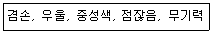
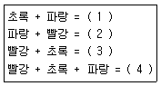

금속도장기능사 (2011-02-13 기출문제)
1과목: 색채
1. 불포화 폴리에스테르와 용제의 역할을 하는 스티렌모노머가 중합 개시제나 촉매의 작용으로 화학반응을 일으켜서 경화되므로 거의 100%가 도막이 되는 퍼티는?
- 래커 퍼티
- 오일 퍼티
- 폴리에스테르 퍼티
- 아미노알키드 퍼티
(정답률: 85%)

2. 가소제는 도료의 조성분류 중 어디에 속하는가?
- 도막형성 주요소
- 도막형성 부요소
- 합성수지류
- 안료
(정답률: 78%)
3. 내산 및 내열성을 현저히 증대시키며 보일러, 요업 등의 부품으로 사용하는 주철은?
- 알루미늄 주철
- 티탄 주철
- 합금 주철
- 니켈 주철
(정답률: 90%)
4. 제청 공정에 대한 설명이다. 옳지 않은 것은?
- 불산 등을 사용하는 산세법은 화학적 제청이다.
- 경질의 두꺼운 녹은 동력공구법이 효과적이다.
- 열팽창 계수의 차이를 이용한 샌드 블라스트법이 있다.
- ㅏ 다량의 녹을 제거 할 때는 수공구법은 적당하지 않다.
(정답률: 74%)
5. 스테인리스강은 연강에 약 몇 %의 크롬이 함유된 것인가?
- 6~10%
- 12~14%
- 18~20%
- 22~24%
(정답률: 70%)
6. 인산아연 피막에 대한 설명 중 틀린 것은?
- 형성된 피막은 결정성이다.
- 처리액의 주성분은 인산과 제1인산아연이다.
- 호페이트와 포스포필라이트가 화성 된다.
- 피막의 중량은 0.3~0.7g/m2 으로 회흑색이다.
(정답률: 50%)
7. 용제의 휘발만으로 도막을 형성하는 도료는?
- 비닐 수지 도료
- 에멀션 도료
- 크실렌
- 래커
(정답률: 85%)
8. 페놀수지 도료에 관한 사항 중 틀린 것은?
- 나무와 철재면에 적합하다.
- 용제로서 미네럴스피릿이 사용된다.
- 내수성, 내약품성이 유성계 도료에 비하여 나쁘다.
- 주로 브러시 도장이나 스프레이 도장을 한다.
(정답률: 64%)
9. 다음 중 1액형 폴리우레탄수지 도료가 아닌 것은?
- 유변성형 폴리우레탄수지 도료
- 폴리올 경화형 폴리우레탄 수지 도료
- 습기 경화형 폴리우레탄수지 도료
- 블록 이소시아네트 경화형 폴리우레탄수지 도료
(정답률: 43%)
10. 알칼리 탈지제가 가져야 할 구비조건으로 틀린 것은?
- 표면장력이 높아야 한다.
- 수세성이 양호하여야 한다.
- 알칼리 함유량이 지속적으로 유지되어야 한다.
- 유지를 용해할 수 있을 뿐 아니라 pH 8.3 이상의 용액이어야 한다.
(정답률: 73%)
11. 다음 안료 중 방청안료는?
- 탄산칼슘
- 황산바륨
- 아연말
- 크레이
(정답률: 77%)
12. 다음 중 열경화성 수지가 아닌 것은?
- 에폭시 수지
- 아크릴 수지
- 요소 수지
- 페놀 수지
(정답률: 53%)
13. 다음 중 콤파운드 사용 목적으로 가장 좋은 것은?
- 광택증진
- 색상부여
- 경도향상
- 투명효과
(정답률: 91%)
14. 다음 중 래커에나멜의 장점이 아닌 것은?
- 속건성이다.
- 광택이 우수하다.
- 내수성이, 부착성이 우수하다.
- 도막이 두껍고 밀착성이 좋다.
(정답률: 32%)
15. 정전 도장에 관한 설명 중 틀린 것은?
- 피도물은 항상 접지할 것
- 노즐 청소시에는 금속제 솔을 사용할 것
- 도장 보스 내에 들어가는 사람은 모두 통전화를 신을 것
- 고압 발생기에는 파일럿 램프에 불이 켜지는지를 확인할 것
(정답률: 88%)
16. 다음 중 탄화수소계(방향쪽) 용제가 아닌 것은?
- 톨루엔
- 아세톤
- 크실렌
- 솔벤트나프타
(정답률: 60%)
17. 다음 중 용제를 설명한 것으로 틀린 것은?
- 건조속도를 조절한다.
- 작업성을 좋게 한다.
- 도막에 평활성(유동성)을 부여하는 성분은 없다.
- 일반적으로 유기용제를 사용하나 물을 사용할 때도 있다.
(정답률: 67%)
18. 래커 서페이서에 대한 설명 중 틀린 것은?
- 건조속도가 빠르다.
- 살붙임이 좋다.
- 전색제는 래커이다.
- 아연화, 도토(陶土) 등을 사용한다.
(정답률: 81%)
19. 근적외선 건조로에서 보통 전구와 피도물의 거리는?
- 램프와 램프 간격의 1.0배
- 램프와 램프 간격의 1.5배
- 램프와 램프 간격의 2.5배
- 램프와 램프 간격의 3.5배
(정답률: 85%)
20. 일반적인 샌드블라스트 작업에 관한 설명으로 틀린 것은?
- 건식법과 습식법이 있다.
- 모개, 강철 알갱이, 기타의 연마재를 사용한다.
- 압축공기 등으로 금속표면에 분사시킨다.
- 충격력이나 마찰력으로 탈지하는 방법이다.
(정답률: 50%)
2과목: 금속도장재료
21. 에어 스프레이 작업시 건의 운행속도로 가장 좋은 것은?
- 30~60cm/sec
- 80~90cm/sec
- 100~120cm/sec
- 130~150cm/sec
(정답률: 75%)
22. 알칼리 탐지에 대한 설명 중 틀린 것은?
- 기름 이외의 오물도 제거된다.
- 전해법을 이용하면 완전탈지가 가능하다.
- 액을 자주 교환해주어야 하므로 비경제적이다.
- 수세가 불충분하면 화성피막에 나쁜 영향을 준다.
(정답률: 53%)
23. 다음 중 기계적인 제청법이 아닌 것은?
- 화성처리법
- 샌드블라스트법
- 불꽃제청법
- 동력공구법
(정답률: 67%)
24. 도막의 물리적 성질에 관한 시험법으로 틀린 것은?
- 도막의 상태 시험
- 부착성 시험
- 내굴곡성 시험
- 침전 시험
(정답률: 69%)
25. 폴리셔(polisher)는 어느 경우에 사용하는 공구인가?
- 유지분을 닦는데
- 나무의 송질을 제거하는데
- 철면의 부식을 털어내는데
- 면을 연마하여 광택을 내는데
(정답률: 91%)
26. 에어 컴프레셔 관련 기기 중 혼탁액인 드레인을 제거하는 것은?
- 공기청정기
- 공기감압밸브
- 공기탱크
- 배관
(정답률: 62%)
27. 안전ㆍ보건표지의 종류와 색상이 잘못 연결된 것은?
- 금지표지-빨강
- 정지표지-노랑
- 안내표지-녹색
- 지시표지-청색
(정답률: 85%)
28. 다음 중 도막의 내구성 시험기로 옳은 것은?
- 묘화 시험기
- 염수분무 시험기
- 에릭센 시험기
- 크로스 커트 시험기
(정답률: 55%)
29. 붓도장 작업의 장점으로 틀린 것은?
- 누구나 손쉽게 취급할 수 있다.
- 용구의 뒤처리가 쉽다.
- 피도물을 임의로 골고루 도장할 수 있다.
- 균일한 도막을 얻을 수 있다.
(정답률: 100%)
30. 도장설비에서 공기의 압력을 일정하게 유지시키고 공기를 정화하여 수분 및 유분 등의 이물질을 제거하는 것은?
- 에어 클리너
- 에어 트랜스포머
- 공기 건조기
- 에어 레귤레이터
(정답률: 69%)
31. 다음 중 도료 손실이 가장 많은 도장 방법은?
- 에어 스프레이 도장
- 에어리스 스프레이 도장
- 정전 스프레이 도장
- 붓 도장 및 로울러 도장
(정답률: 69%)
32. 도장의 목적과 가장 관련이 없는 것은?
- 물체보호
- 중량감소
- 색채조절
- 안전표시
(정답률: 95%)
33. 도장의 결함에 대한 설명 중 잘못된 것은?
- 주름 현상(wrinkling)은 하도의 건조가 불충분할 때에 생긴다.
- 피막 현상(skinning)이 생기면 증발이 빠르고 용해력이 약한 용제를 사용한다.
- 부품을 현상(blistering)에는 규정된 온도로 가열을 충분히 한다.
- 얼룩 현상(gloss shitting)시에는 균일하게 도장을 한다.
(정답률: 63%)
34. 다음은 전착도장의 장ㆍ단점에 대한 설명이다. 옳은 것은?
- 가열 온도가 낮고 중복 도장이 가능하다.
- 도전성이 피도물이 아니면 도장이 곤란하다.
- 금속 용출에 대한 공해 대책이 필요하지 않다.
- 고점도, 고농도의 도료를 사용하기 때문에 도료의 도착효율이 좋다.
(정답률: 58%)
35. 도막형성 후에 일어나는 결함 중에 메탈릭 얼룩이 발생하는 원인과 가장 관계없는 것은?
- 도장 점도가 낮을 때
- 신너의 증발이 너무 빠를 때
- 도료의 퍼짐성이 너무 많을 때
- 한 번에 너무 두껍게 도장했을 때
(정답률: 44%)
36. 은폐력과 착색력을 가졌으며, 색상을 부여하고, 유기와 무기안료로 구분되는 것은?
- 방청안료
- 특수안료
- 착색안료
- 체질안료
(정답률: 80%)
37. 도료의 물성을 좌우하는 인자로 거리가 먼 것은?
- 원료의 종류
- 도장횟수
- 배합비
- 경화조건
(정답률: 95%)
38. 열풍건조로 중 직접식에 대한 설명으로 적합하지 않은 사항은?
- 열교환기가 설치되어 있다.
- 배기가스 연돌이 필요하다.
- 열효율은 보통 90~95% 정도이다.
- 일반적으로 하도건조에 사용된다.
(정답률: 43%)
39. 분체도료의 도장에 대한 설명 중 옳지 않은 것은?
- 무용제 도장법이다.
- 저장이나 수송이 불편하다.
- 유기용제로 인한 중독이 없는 저공해 도료이다.
- 파도물에 도착시켜 가열하면 융해와 경화의 과정을 거쳐 도막이 만들어 진다.
(정답률: 69%)
40. 도료를 너무 묽게 하거나, 너무 두껍게 도장했을 때 일어나기 쉬운 불량은?
- 겔화
- 곰보
- 줄무늬
- 흐름
(정답률: 90%)
3과목: 금속도장
41. 다음 중 연마기 사용시 사용 방향이 다른 것은?
- 싱글 액션 샌더
- 더블 액션 샌더
- 오비탈 샌더
- 스트레이트 샌더
(정답률: 70%)
42. 유기용제의 영향으로 나타나는 현상이 아닌 것은?
- 혈액장해
- 간장장해
- 협착사고
- 마취작용
(정답률: 87%)
43. 상도도장 작업이 끝난 후 40~80℃로 강제 건조하고자 할 때 가장 좋은 가열시간은?
- 10분 이하
- 20~30분
- 40~50분
- 1시간 이상
(정답률: 73%)
44. 금속의 전처리 과정에 속하지 않는 것은?
- 탈지
- 프라이머
- 제철
- 화성피막
(정답률: 72%)
45. 가스 중독시 조치할 사항으로 틀린 것은?
- 신선한 공기가 있는 장소로 이동한다.
- 추위를 느끼지 않도록 보온한다.
- 머리를 높게 하여 바르게 눕게 한다.
- 심한 경우 인공호흡이나 산소호흡을 시킨다.
(정답률: 80%)
46. 도장작업 화재 진화에 가장 적합하지 않는 소화 설비는?
- 포말소화설비
- 분말소화설비
- 수소소화설비
- 이산화탄소 및 할로겐 화합물 소화설비
(정답률: 80%)
47. 에어 스프레이로 분무도장 작업시에 도료가 균일하게 나오지 않을 경우의 원인이 아닌 것은?
- 도료 점도가 낮다.
- 도료 조인트의 풀림 또는 파손되었다.
- 도료 용기의 공기구멍이 막혔다.
- 도료 통로로 공기가 들어간다.
(정답률: 89%)
48. 퍼티 도포작업에 대한 설명으로 틀린 것은?
- 퍼티 도막을 1회에 과도하게 작업하지 않도록 한다.
- 주제와 경화제를 경우에 따라 자유로이 변화시켜 사용해야 한다.
- 핸드 블록은 퍼티를 수연마를 할 경우에 사용하는 공구이다.
- 퍼티 사용 전에 침전된 퍼티를 믹싱주걱을 이용해 충분히 저어 혼합해서 사용한다.
(정답률: 87%)
49. 먼셀계의 색채 측정 중 종이띠를 만들어 휘어서 둥근테를 만들었을 때의 원둘레는?
- 색상
- 순도
- 채도
- 명도
(정답률: 75%)
50. 다음 보기와 같은 연상을 일으키는 색은?

- 흰색
- 회색
- 검정
- 보라
(정답률: 79%)
51. 안전색체 사용통칙 중 녹색의 표시 사항은?
- 위험
- 주의
- 진행
- 멈춤
(정답률: 86%)
52. 다음 사항은 색채조절의 기본형을 설명한 것이다. 잘못 설명된 것은?
- 사무실은 냉정하고 어두운 느낌
- 아동실은 따뜩하고 발랄한 느낌
- 화장실은 청결하고 산뜻한 느낌
- 거실은 안정감, 침착성이 있는 느낌
(정답률: 100%)
53. 보기는 가법혼색에 대한 내용이다. ()안에 들어갈 순서로 옳은 것은?

- 시안-마젠타-노랑-흰색
- 시안-녹색-주황-흰색
- 시안-노랑-마젠타-검정
- 시안-마젠타-노랑-검정
(정답률: 57%)
54. 빨강의 물감 혼합에서 일어나는 현상으로 옳은 것은?
- 검정을 섞으면 색상은 변하나 채도는 변하지 않는다.
- , 순색의 파랑을 섞으면 빨강보다 명도가 높은 보라가 된다.
- 순색의 연두를 섞으면 회색이 되므로 두색은 보색 관계이다.
- 흰색과 검정을 섞으면 색상은 변하지 않으며 빨강의 탁색이 된다.
(정답률: 45%)
55. 다음 중 수축색(후퇴색)은?
- 명도가 높은 색
- 채도가 높은 색
- 한색과 명도가 낮은 색
- 난색과 채도가 높은 색
(정답률: 67%)
56. 다음 중 주목성이 큰 조건과 거리가 먼 것은?
- 고명도의 색
- 고채도의 색
- 중성색과 한색
- 순색, 원색
(정답률: 77%)
57. 우리 눈으로 볼 수 있는 가시광선의 범위는 380nm~780nm이다. 600nm에서 확인할 수 있는 색명은?
- 청색
- 청록
- 황색 기미의 초록색
- 적색 기미의 주황색
(정답률: 74%)
58. 배색할 때의 주의할 점과 거리가 먼 것은?
- 전체에 공통적인 부분을 남긴다.
- 색의 경중감을 이용한다.
- 환경의 밝고 어두움을 고려한다.
- 색상의 수를 될 수 있는 한 많이 한다.
(정답률: 86%)
59. 명시도에 대한 설명으로 옳은 것은?
- 난색보다 한색의 명시도가 높다.
- 난색보다 중성색이 명시도가 높다.
- 고채도보다 저채도의 색이 명시도가 높다.
- 저명도보다 고명도의 색이 명시도가 높다.
(정답률: 73%)
60. 옛날부터 전해오는 습관적인 색 이름이나 지명, 장소, 식물, 동물 등의 고유한 이름으로 붙여 놓은 색명은?
- 기본색명
- 일반색명
- 관용색명
- 계통색명
(정답률: 72%)